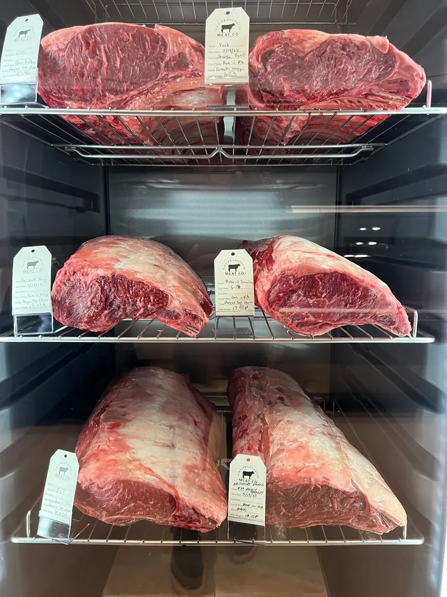

In-House · Fell StreetSpecialty Dry Aging
What makes our dry aging different.
At San Francisco Meat Co., our dry aging process is a blend of time, science, and craftsmanship. In our temperature- and humidity-controlled aging room, premium beef cuts rest and develop unparalleled depth of flavor, tenderness, and aroma. Over several weeks, natural enzymes break down muscle fibers while the outer layer forms a protective crust, concentrating the meat's rich, buttery essence. The result is an exceptional steak experience — bold, complex, and unmistakably San Francisco Meat Co. quality.
- Custom dry age programs (21 to 90+ days)
- Premium cut selection
- Private label aging for your restaurant
- Controlled aging environment
- Dry age retail & wholesale supply
- Custom portioning & packaging
- Specialty dry age pork & poultry programs